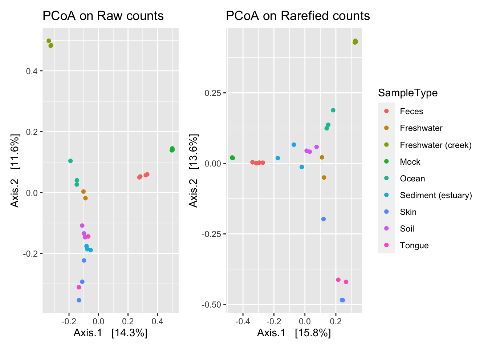
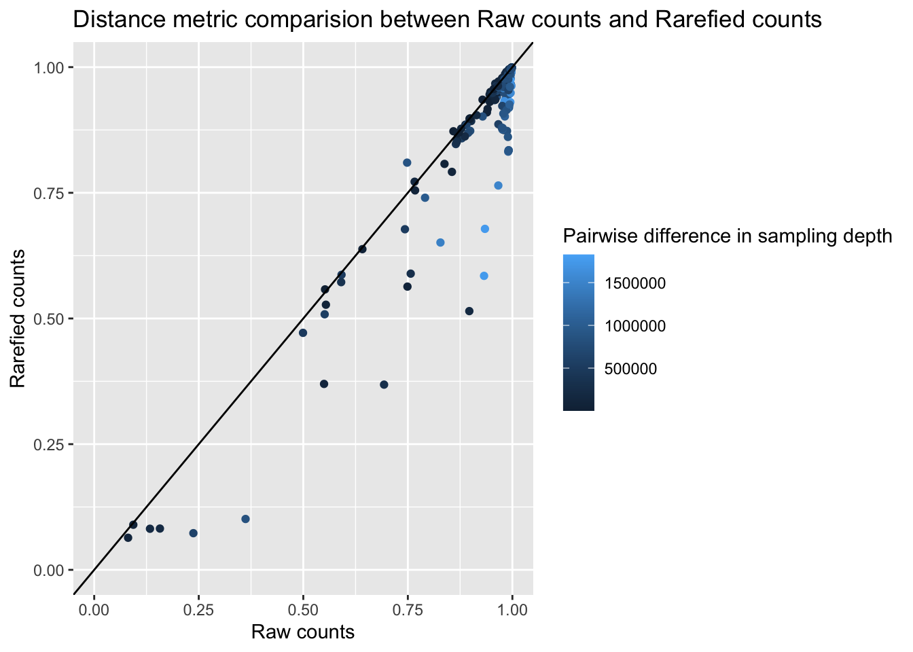
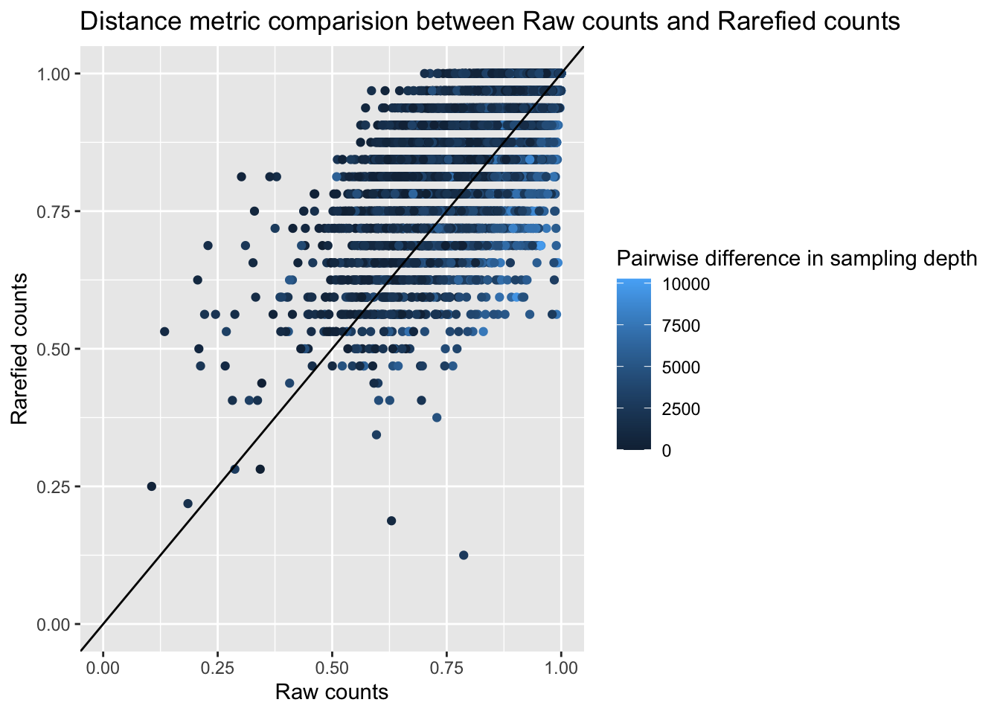

Chapter 5 Subsampling Methods
5.1 Rarefying
5.1.1 About Rarefying
Rarefying is another common normalization technique that standardizes the library size across samples that was originally used in ecology. This method standardizes the read depth across all samples. To perform this method we first choose a minimum library size. Looking at rarefaction/collectors curves, or using a certain percentile can guide choosing this cutoff. Then all samples that have a read depth below this cutoff are discarded. Thus this method has a built-in filtering step. Next, we sample without replacement of the size of the chosen cutoff. It can be a standalone method or combined with other methods and transformations.
This is a very commonly used method, but it has also been criticized (McMurdie and Holmes 2014). First of all, it throws away valid data, and this results in a loss of power and an increase in false positives. Rare taxa can be removed in this approach too. It is however encouraged when we have widely different library sizes as it can lower the false discovery rate (Weiss et al. 2017), and has also been shown to perform well in community-level analysis (McKnight et al. 2019), as it completely standardizes the read count depth, and some methods are sensitive to differences in read count. Rarefying has been shown to separate by biological signal in ordination methods based on presence/absence.
5.1.2 Rarefying walkthrough
Consider the following example dataset.
| Taxa | Sample 1 | Sample2 | Sample 3 |
|---|---|---|---|
| Taxon 1 | 132 | 103 | 11 |
| Taxon 2 | 7 | 48 | 3 |
| Taxon 3 | 0 | 2 | 1 |
| Taxon 4 | 23 | 15 | 2 |
| Taxon 5 | 71 | 80 | 5 |
To normalize this data by rarefying, we first choose a minimum sampling depth, or in other words, the minimum column sum. After normalizing, the column sum of all samples will be this size. Any samples that are below this minimum will be dropped from analysis. We choose 200 as our minimum here. In practice the counts will normally be much higher. In this example, our sampling depths are 223, 248, and 20. Thus the third sample will be dropped in this procedure.
Since we are randomly sampling, we need to keep track of the seed so this process is reproducible.
We then randomly sample taxa from each sample/column in the proportions corresponding to the raw counts. The below table shows the table from above after we rarefy. Notice that the rare Taxon 3, which originally was present in Sample 1 and 3 is now completely removed from the analysis.
| Taxa | Sample 1 | Sample2 |
|---|---|---|
| Taxon 1 | 115 | 90 |
| Taxon 2 | 6 | 39 |
| Taxon 3 | 0 | 0 |
| Taxon 4 | 18 | 11 |
| Taxon 5 | 61 | 60 |
5.1.3 Rarefying R code
We now show the process of rarefying a real dataset. The following function returns a rarefied phyloseq object. We can either pass in the minimum sampling depth as a second argument, or use the default minimum depth of the samples.
norm_rarefy <- function(phyloseq, depth = min(sample_sums(phyloseq))){
return(phyloseq::rarefy_even_depth(phyloseq,sample.size = depth))
}5.1.3.1 Rarefying on Global Patterns
We use the above function to rarefy the Global Patterns data. The first difficulty is choosing a minimum sampling depth. The Global Patterns dataset already has a very high sampling depth for all samples, so we will chose the lowest as the minimum depth to rarefy to.Since we chose the minimum sampling depth, no samples have been dropped. In data sets where we have low sampling depth there is a balance between how many samples to drop and how low to set the minimum depth to.
## You set `rngseed` to FALSE. Make sure you've set & recorded
## the random seed of your session for reproducibility.
## See `?set.seed`## ...We can check that indeed all samples now have the same sampling depth, which is 15905. Note that the highest sampling depth in this dataset was almost 2 million, so we have discarded a lot of data to reduce to 15905.
## [1] 1842380## CL3 CC1 SV1 M31Fcsw M11Fcsw M31Plmr M11Plmr F21Plmr
## 15905 15905 15905 15905 15905 15905 15905 15905
## M31Tong M11Tong LMEpi24M SLEpi20M AQC1cm AQC4cm AQC7cm NP2
## 15905 15905 15905 15905 15905 15905 15905 15905
## NP3 NP5 TRRsed1 TRRsed2 TRRsed3 TS28 TS29 Even1
## 15905 15905 15905 15905 15905 15905 15905 15905
## Even2 Even3
## 15905 15905We can again compare the PCoA plots between rarefied and raw counts, coloring by sample type to view clusters.
plot_ordination(gp_raw,
phyloseq::ordinate(gp_raw, "PCoA", "bray"),
color = "SampleType",
title = "PCoA on Raw counts") +
plot_ordination(gp_rare,
phyloseq::ordinate(gp_rare, "PCoA", "bray"),
color = "SampleType",
title = "PCoA on Rarefied counts") +
plot_layout(guides = 'collect')
Now examine how the distance matrices change before/after normalization. We see a similar pattern to TSS when distance matrices calculated from rarefied counts are compared to those from the raw counts.
# Identify any samples filtered in rarefying process
rare_samples <- sample_names(gp_rare)
gp_raw_match <- prune_samples(rare_samples, gp_raw)
plot_norm_changes(gp_rare, gp_raw_match,
x_lab = "Raw counts", y_lab = "Rarefied counts",
title = "Distance metric comparision between Raw counts and Rarefied counts ")
5.1.4 Rarefying on Kostic Data
## You set `rngseed` to FALSE. Make sure you've set & recorded
## the random seed of your session for reproducibility.
## See `?set.seed`## ...## 128OTUs were removed because they are no longer
## present in any sample after random subsampling## ...plot_norm_changes(k_rare, k_raw,
x_lab = "Raw counts", y_lab = "Rarefied counts",
title = "Distance metric comparision between Raw counts and Rarefied counts ")
References
McKnight, Donald T., Roger Huerlimann, Deborah S. Bower, Lin Schwarzkopf, Ross A. Alford, and Kyall R. Zenger. 2019. “Methods for Normalizing Microbiome Data: An Ecological Perspective.” Methods in Ecology and Evolution 10 (3): 389–400. https://doi.org/10.1111/2041-210X.13115.
McMurdie, Paul J., and Susan Holmes. 2013. “Phyloseq: An R Package for Reproducible Interactive Analysis and Graphics of Microbiome Census Data.” PLOS ONE 8 (4): e61217. https://doi.org/10.1371/journal.pone.0061217.
2014. “Waste Not, Want Not: Why Rarefying Microbiome Data Is Inadmissible.” PLOS Computational Biology 10 (4): e1003531. https://doi.org/10.1371/journal.pcbi.1003531.Weiss, Sophie, Zhenjiang Zech Xu, Shyamal Peddada, Amnon Amir, Kyle Bittinger, Antonio Gonzalez, Catherine Lozupone, et al. 2017. “Normalization and Microbial Differential Abundance Strategies Depend Upon Data Characteristics.” Microbiome 5 (1): 27. https://doi.org/10.1186/s40168-017-0237-y.